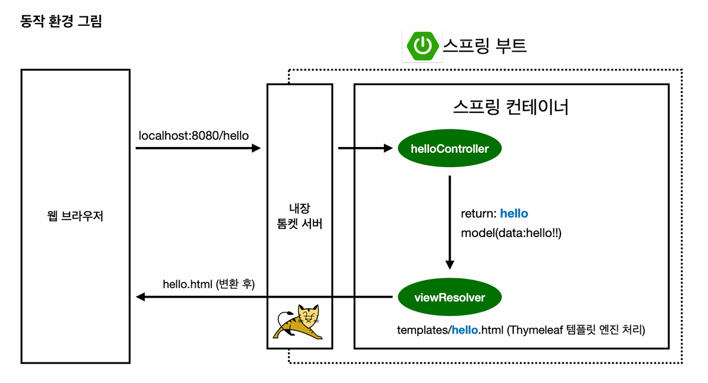

1. 프로젝트 환경 설정
요약
- Spring Boot 3.x + Java 17로 프로젝트를 생성한다. Boot 2.x 설정을 그대로 복붙하지 않고,
javax.*→jakarta.*변경에 주의. - starter 하나만 선언해도 내장 Tomcat · Spring MVC · 로깅 등 의존 라이브러리가 함께 딸려온다.
- 컨트롤러가 뷰 이름 문자열을 반환하면
viewResolver가templates/뷰.html을 찾아 Thymeleaf로 렌더링한다. static/index.html은 웰컴 페이지,templates/*.html은 동적 렌더링 대상이다.gradlew build로 Fat JAR을 만들어java -jar로 실행한다.
버전 선택
강의자료의 예전 build.gradle 설정을 그대로 따라야 하는지, H2와 JDK 버전은 어떻게 맞춰야 하는지 확인했다.
- 강의자료의
2.3.1.RELEASE,sourceCompatibility = '11'은 Boot 2.x 기준이라 그대로 복사하지 않는다. - Boot 3.x에서는 Java 17 이상을 사용하고,
javax.*대신jakarta.*패키지를 사용한다. - H2는 Boot 3.x 기준
2.1.214이상이 맞고, 로컬의2.2.224를 그대로 사용할 수 있다. - IntelliJ에서 Project SDK와 Gradle JVM을 모두 JDK 17로 맞춰야 한다.
라이브러리 살펴보기
build.gradle에 starter 몇 개만 추가해도 실제로는 훨씬 많은 라이브러리가 함께 들어온다. Gradle이 선언한 라이브러리뿐 아니라 그 라이브러리가 의존하는 하위 라이브러리까지 자동으로 가져오기 때문이다.
- Gradle Dependencies: 내가
build.gradle에 직접 선언한 의존성 - External Libraries: Gradle이 해석한 결과로 실제 프로젝트에 들어온 전체 라이브러리
현재 build.gradle 선언
dependencies {
implementation 'org.springframework.boot:spring-boot-starter-thymeleaf'
implementation 'org.springframework.boot:spring-boot-starter-web'
testImplementation 'org.springframework.boot:spring-boot-starter-test'
testRuntimeOnly 'org.junit.platform:junit-platform-launcher'
}starter가 끌고 오는 주요 라이브러리
| 내가 선언한 starter | 함께 들어오는 라이브러리 |
|---|---|
spring-boot-starter-web | 내장 Tomcat, Spring MVC, Spring Web |
spring-boot-starter-thymeleaf | Thymeleaf 엔진, thymeleaf-spring6 |
spring-boot-starter-test | JUnit 5, Mockito, AssertJ, Spring Test |
(공통) spring-boot-starter | spring-context, spring-core, Logback, SLF4J |
spring-boot-starter-web 하나만 추가해도 별도 Tomcat 설치 없이 HelloSpringApplication 실행 시 웹 서버가 함께 뜨는 이유가 내장 Tomcat이 자동으로 딸려오기 때문이다.
로그 구조
코드에서 로그를 남길 때는 SLF4J API를 사용하고, 실제 출력은 Logback이 담당한다. 둘을 분리한 이유는 나중에 Logback 대신 다른 구현체로 교체해도 코드를 바꾸지 않아도 되기 때문이다.
HTML charset 선언
강의에서 나오는 아래 태그의 의미를 정리했다.
<meta http-equiv="Content-Type" content="text/html; charset=UTF-8" />| 속성/값 | 설명 |
|---|---|
http-equiv="Content-Type" | HTTP 응답 헤더의 Content-Type을 HTML 안에서 선언하는 속성 |
content="text/html; charset=UTF-8" | 문서 타입은 text/html, 문자 인코딩은 UTF-8 |
UTF-8은 한글을 포함한 전 세계 문자를 하나의 인코딩으로 표현할 수 있다. 선언하지 않으면 브라우저가 인코딩을 추측하다가 한글이 깨질 수 있다.
HTML5에서는 아래처럼 짧게 써도 동일한 의미이고, 현재 프로젝트에서는 이 방식을 사용한다.
<meta charset="UTF-8" />반드시 <head> 안에서 가장 먼저 위치시켜야 브라우저가 파싱 시작과 동시에 인코딩을 인식할 수 있다.
MVC 동작 흐름

- ① 브라우저 요청 — 주소창에
localhost:8080/hello입력 → GET 요청 발생 - ② 내장 Tomcat 수신 —
spring-boot-starter-web이 끌고 온 내장 서버가 요청을 받음. 별도 설치 불필요 - ③ Controller 실행 —
@GetMapping("/hello")가 달린HelloController.hello()호출. Spring이Model객체를 자동 주입 - ④ 뷰 이름 반환 —
return "hello"로 뷰 이름 전달.Model에 담긴 데이터도 함께 넘어감 - ⑤ viewResolver — 뷰 이름
"hello"를 받아templates/hello.html경로로 변환 후 Thymeleaf에 전달 - ⑥ Thymeleaf 렌더링 후 응답 —
th:text등을 실제 데이터로 채워 완성된 HTML을 브라우저에 전송
Thymeleaf 템플릿 엔진
서버에서 HTML을 동적으로 만들어 브라우저에 내려주는 템플릿 엔진이다. resources/templates/ 아래 HTML 파일을 읽고, 컨트롤러가 넘긴 데이터를 th:* 속성으로 채워서 완성된 HTML을 응답한다.
Hello World 기본 구조
컨트롤러 (controller/HelloController.java)
@Controller
public class HelloController {
@GetMapping("/hello")
public String hello(Model model) {
model.addAttribute("data", "hello!!");
return "hello"; // → templates/hello.html 을 찾아서 렌더링
}
}템플릿 (resources/templates/hello.html)
<!DOCTYPE HTML>
<html xmlns:th="http://www.thymeleaf.org">
<head>
<meta charset="UTF-8" />
<title>Hello</title>
</head>
<body>
<p th:text="'안녕하세요. ' + ${data}">안녕하세요. 손님</p>
</body>
</html>태그 안의 안녕하세요. 손님은 기본값으로, 서버 없이 HTML 파일만 열었을 때 보인다. Thymeleaf의 장점 중 하나다.
요청 흐름
브라우저 GET /hello
→ HelloController.hello() 실행
→ model에 data="hello!!" 추가
→ "hello" 반환
→ Thymeleaf가 templates/hello.html 렌더링
→ <p>안녕하세요. hello!!</p> 로 완성해서 응답파일 위치 규칙
| 파일 종류 | 위치 | 설명 |
|---|---|---|
| 템플릿 (동적 HTML) | resources/templates/ | Thymeleaf가 렌더링하는 파일 |
| 정적 파일 (HTML/CSS/JS) | resources/static/ | 서버 처리 없이 그대로 내려주는 파일 |
static/index.html은 http://localhost:8080/ 루트 접속 시 자동으로 반환되는 웰컴 페이지다.
자주 쓰는 th:* 속성
| 속성 | 역할 |
|---|---|
th:text="${변수}" | 태그 텍스트를 변수 값으로 교체 |
th:href="@{/경로}" | 링크 경로 설정 |
th:each="item : ${list}" | 반복 렌더링 |
th:if="${조건}" | 조건부 렌더링 |
th:value="${변수}" | input 값 설정 |
메뉴얼에서 봐야 할 부분
| 항목 | 내용 |
|---|---|
7.1.10 Template Engines | Thymeleaf 자동설정, 기본 경로(templates/), 캐시 설정 |
7.1.5 Static Content | 정적 파일 위치(static/), 웰컴 페이지 동작 방식 |
개발 중에는 템플릿 수정 후 바로 반영되게 캐시를 끈다.
spring.thymeleaf.cache=false개념 정리
웹 진입점이란?
브라우저가 URL을 입력하면 요청이 서버로 날아온다. 서버 안에서 그 요청을 처음 받아서 처리를 시작하는 지점이 진입점이다. Spring Boot에서는 @GetMapping 같은 어노테이션이 붙은 컨트롤러 메서드가 진입점 역할을 한다.
브라우저 → GET /hello → HelloController.hello() ← 여기가 진입점viewResolver란?
컨트롤러가 return "hello"로 문자열 뷰 이름만 반환하면, viewResolver가 그 이름을 받아 실제 파일 경로로 변환해서 Thymeleaf에 넘겨주는 역할을 한다.
return "hello"
→ viewResolver
→ "classpath:/templates/hello.html"
→ Thymeleaf 렌더링Spring Boot + Thymeleaf 조합에서는 ThymeleafViewResolver가 자동 등록되고, 규칙은 아래처럼 고정돼 있다.
prefix: classpath:/templates/
suffix: .html
→ "hello" = templates/hello.html
→ "member/list" = templates/member/list.html개발자가 직접 경로를 붙이지 않아도 되는 이유가 viewResolver가 대신 조립해주기 때문이다.
Kotlin과 비슷한가?
동작 방식 자체는 비슷하지 않다. Kotlin의 when 표현식처럼 값을 매핑하는 느낌이 있지만, viewResolver는 런타임에 문자열을 파일 경로로 변환하는 Spring 내부 컴포넌트다.
단, Spring Boot를 Kotlin으로 작성해도 viewResolver 동작은 완전히 동일하다. Java 대신 Kotlin 문법을 쓸 뿐이다.
// Kotlin으로 쓴 컨트롤러 — viewResolver 동작은 Java와 동일
@Controller
class HelloController {
@GetMapping("/hello")
fun hello(model: Model): String {
model.addAttribute("data", "hello!!")
return "hello" // viewResolver가 templates/hello.html 로 해석
}
}Spring이 JVM 위에서 동작하기 때문에 Java든 Kotlin이든 컴파일 후 동일한 바이트코드가 되고, viewResolver는 그 바이트코드를 실행하는 시점에 뷰 이름을 처리한다.
컨트롤러란?
사용자의 HTTP 요청을 받아서 어떤 데이터를 준비하고 어떤 화면을 보여줄지 결정하는 클래스다. 요리로 비유하면 주문을 받고 주방(서비스)에 지시하고 결과를 손님(브라우저)에게 전달하는 홀 직원 역할이다.
패키지로 만드는 이유
Java에서 패키지(controller, service, repository 등)는 파일을 역할별로 묶는 폴더다. 기능적으로는 없어도 동작하지만 두 가지 이유로 쓴다.
- Spring 자동 탐색 범위 기준이 된다.
@SpringBootApplication이 있는 클래스 패키지 하위를 스캔하므로 패키지 바깥에 두면 Spring이 인식하지 못한다. - 역할 구분으로 유지보수성이 높아진다. 프로젝트가 커질수록 어디에 뭐가 있는지 명확해진다.
어노테이션이란?
@로 시작하는 메타데이터 표시다. 코드 자체를 실행하지는 않고 "이 클래스/메서드/필드는 이런 역할이야"라고 Spring에게 알려주는 라벨 역할을 한다.
@Controller // "이 클래스는 컨트롤러야"
@GetMapping("/hello") // "GET /hello 요청이 오면 이 메서드 실행해"Spring은 어노테이션을 읽고 필요한 처리를 대신 해준다. 개발자가 직접 요청을 파싱하거나 라우팅 코드를 짤 필요가 없어지는 것이 핵심 이점이다.
어노테이션 없이 직접 구현하면 아래처럼 URL을 일일이 꺼내고 분기해야 한다.
// 어노테이션 없이 순수 Java로 직접 파싱/라우팅하는 예시 (Servlet 방식)
protected void service(HttpServletRequest request, HttpServletResponse response) {
String uri = request.getRequestURI(); // "/hello" 직접 꺼냄
String method = request.getMethod(); // "GET" 직접 꺼냄
if (method.equals("GET") && uri.equals("/hello")) {
String name = request.getParameter("name"); // 쿼리 파라미터도 직접 꺼냄
response.getWriter().write("<p>안녕하세요 " + name + "</p>"); // HTML도 직접 작성
} else if (method.equals("GET") && uri.equals("/bye")) {
// ...
} else {
response.setStatus(404);
}
}@GetMapping("/hello")와 Model 하나로 이 코드 전체를 대체한다.
@GetMapping이란?
HTTP GET 요청과 특정 URL 경로를 이 메서드에 연결하는 어노테이션이다. 브라우저 주소창에 URL을 입력하거나 링크를 클릭하면 GET 요청이 발생한다.
| 어노테이션 | HTTP 메서드 | 주요 용도 |
|---|---|---|
@GetMapping | GET | 페이지 조회, 데이터 읽기 |
@PostMapping | POST | 폼 제출, 데이터 생성 |
@PutMapping | PUT | 데이터 수정 |
@DeleteMapping | DELETE | 데이터 삭제 |
Model 클래스란?
컨트롤러에서 Thymeleaf 템플릿으로 데이터를 전달하는 그릇이다. Map처럼 키-값 쌍으로 데이터를 담는다.
model.addAttribute("data", "hello!!");
// ↑키 ↑값템플릿에서는 키 이름으로 꺼내 쓴다.
<p th:text="${data}">기본값</p>
<!-- "hello!!" 로 교체됨 -->Spring이 메서드 파라미터에 Model이 있으면 자동으로 만들어서 주입해준다. 직접 new Model()로 생성하지 않아도 된다.
// Spring이 알아서 Model 객체를 만들어서 넘겨줌
@GetMapping("/hello")
public String hello(Model model) { // ← 여기 선언만 하면 됨
model.addAttribute("data", "hello!!");
return "hello";
}이 동작 방식을 의존성 주입(DI, Dependency Injection) 이라고 부른다. 필요한 객체를 내가 직접 만드는 게 아니라 Spring이 만들어서 넣어주는 것이다. Spring의 핵심 개념 중 하나로, 뒤 강의에서 더 깊게 다룬다.
xmlns란?
XML NameSpace의 줄임말이다. XML/HTML에서 속성 이름 충돌을 막기 위해 출처를 명시하는 선언이다.
<html xmlns:th="http://www.thymeleaf.org">HTML 표준에는 th:text 같은 속성이 없다. th:로 시작하는 속성이 Thymeleaf 것임을 알 수 있도록 출처 URL을 별칭(th)에 매핑하는 것이다. URL 자체에 실제로 접속하는 게 아니라 이름표 역할만 한다.
JVM이란?
Java Virtual Machine의 줄임말로, Java 바이트코드를 실제 OS 위에서 실행해주는 가상 머신이다.
HelloController.java ← 개발자가 작성하는 소스 코드
↓ javac 컴파일
HelloController.class ← JVM이 읽는 바이트코드
↓ JVM 실행
실제 CPU / OS ← Windows, Mac, Linux 상관없이 동일하게 동작Java가 "한 번 작성하면 어디서나 실행(Write Once, Run Anywhere)"되는 이유가 JVM 덕분이다. .class 바이트코드는 OS에 종속되지 않고, JVM이 각 OS에 맞게 번역해서 실행한다.
Spring Boot의 Fat JAR도 결국 java -jar 명령으로 JVM 위에서 돌아간다. Kotlin으로 작성해도 JVM 바이트코드로 컴파일되므로 동작 방식이 동일하다.
컨트롤러 수정 시 왜 서버를 다시 실행해야 하나?
Java는 .java 소스 파일을 JVM이 읽을 수 있는 .class 바이트코드로 컴파일한 뒤 실행한다. 서버가 한 번 뜨면 JVM은 그 시점의 .class 파일을 메모리에 올려두고 계속 쓴다.
HelloController.java
↓ 컴파일
HelloController.class ← JVM이 이걸 메모리에 올려서 실행 중코드를 수정하면 .java만 바뀌고 JVM 메모리 안의 .class는 그대로다. 그래서 수정 내용이 반영되려면 서버를 껐다 켜서 JVM이 새 .class를 다시 읽게 해야 한다.
Spring Boot DevTools로 자동 재시작
build.gradle에 아래를 추가하면 코드 저장 시 자동으로 재시작해준다.
implementation 'org.springframework.boot:spring-boot-devtools'단, 완전한 "재시작"이지 즉각 반영은 아니다. DevTools는 클래스 변경을 감지해서 서버를 빠르게 재시작하는 방식이다. HTML/CSS 같은 정적 파일은 재시작 없이 바로 반영된다.
| 변경 대상 | DevTools 없이 | DevTools 있을 때 |
|---|---|---|
| Java 코드 (컨트롤러 등) | 수동 재시작 필요 | 자동 재시작 |
templates/ HTML | 수동 재시작 필요 | 자동 재시작 |
static/ HTML·CSS·JS | 수동 재시작 필요 | 재시작 없이 즉시 반영 |
HTTP 상태 코드란?
브라우저가 서버에 요청을 보내면 서버는 결과와 함께 3자리 숫자 코드를 응답한다. 요청이 어떻게 처리됐는지를 나타낸다.
| 코드 | 의미 | 언제 보이나 |
|---|---|---|
200 OK | 요청 성공 | 페이지 정상 응답 |
201 Created | 생성 성공 | POST로 데이터를 새로 만들었을 때 |
301 Moved Permanently | 영구 이동 | URL이 바뀌어서 새 주소로 리다이렉트 |
400 Bad Request | 잘못된 요청 | 클라이언트가 요청을 잘못 보냈을 때 |
404 Not Found | 리소스 없음 | 해당 URL에 매핑된 컨트롤러가 없을 때 |
500 Internal Server Error | 서버 내부 오류 | 컨트롤러에서 예외가 터졌을 때 |
앞자리 숫자로 대략적인 분류를 알 수 있다.
2xx: 성공3xx: 리다이렉트4xx: 클라이언트 잘못 (요청 문제)5xx: 서버 잘못 (코드 문제)
Spring Boot에서 @GetMapping("/hello")를 안 만들고 /hello를 요청하면 404가 뜨는 이유가 매핑된 메서드를 찾지 못했기 때문이다.
localhost:8080 과 / /hello 의 차이
http://localhost:8080/hello
↑ ↑ ↑
호스트 포트 경로(path)| 부분 | 의미 |
|---|---|
localhost | 내 컴퓨터를 가리키는 호스트명. 127.0.0.1과 동일 |
8080 | Spring Boot 내장 Tomcat이 기본으로 열어두는 포트 번호 |
/ | 루트 경로. static/index.html이 웰컴 페이지로 자동 응답 |
/hello | @GetMapping("/hello")가 처리하는 경로 |
localhost:8080은 "내 컴퓨터의 8080번 문을 두드려"이고, 그 뒤의 /, /hello는 "그 문 안에서 어느 방으로 갈지"를 결정한다.
빌드 및 실행
gradlew 실행 방법
./는 Linux/Mac 셸 문법이라 Windows cmd에서는 인식하지 못한다.
| 환경 | 명령어 |
|---|---|
| Windows cmd | gradlew bootRun 또는 gradlew.bat bootRun |
| PowerShell | .\gradlew bootRun |
| Linux / Mac | ./gradlew bootRun |
gradlew.bat이 "배치 작업"이라고 뜨는 이유
.bat이 Windows 배치(Batch) 파일 확장자이기 때문이다. 배치 파일은 명령어 여러 개를 순서대로 실행하는 Windows 스크립트다. gradlew.bat 안에는 java -jar gradle... 같은 명령어들이 담겨 있고, Gradle 팀이 Windows용으로 만들어둔 것이다. Linux/Mac에서는 확장자 없는 gradlew 셸 스크립트를 대신 쓴다.
빌드 결과물 (build/libs/)
gradlew build 실행 후 build/libs/ 아래에 두 개의 JAR 파일이 생긴다.
| 파일 | 크기 | 설명 |
|---|---|---|
hello-spring-0.0.1-SNAPSHOT.jar | ~22MB | Fat JAR — 내 코드 + Spring + Tomcat + Thymeleaf 전부 포함. 이걸로 실행 |
hello-spring-0.0.1-SNAPSHOT-plain.jar | ~2KB | 내가 직접 작성한 클래스 파일만 포함. 라이브러리가 없어서 단독 실행 불가 |
용량 차이(2KB vs 22MB)가 라이브러리 포함 여부의 차이다.
Fat JAR 실행
java -jar hello-spring-0.0.1-SNAPSHOT.jarplain.jar로 실행하면 Spring 코드가 없으니 바로 오류가 난다.
확인 체크리스트
HelloSpringApplication기본 클래스 실행 확인http://localhost:8080접속 확인@GetMapping+Model+return "뷰이름"흐름 이해templates/hello.html만들고th:text동작 확인static/index.html웰컴 페이지 확인- 최종 HTML 정리본 생성